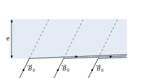
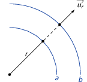
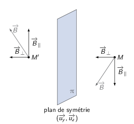
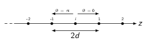

TD6 : Milieux magnétiques
1 Introduction
Dans la plupart des matériaux soumis à un champ magnétique, les charges liées se déplacent à l'échelle atomique faisant apparaître des boucles de courant i.e. des dipôles magnétiques : la milieu s'aimante. Ainsi, l'aimantation \(\vv{M}\) d'un matériau correspond à la densité volumique de moment magnétique \(\vv{m}\) soit
\begin{align*} \vv{M}=\frac{d\vv{m}}{d\tau} \end{align*}Pour rappel, le moment dipolaire magnétique \(\vv{m}\) d'une boucle de courant est égale à \(\vv{m}=I\times\vv{S}\).
On peut alors introduire une densité de courant liés (ou d'aimantation) \(\vv{j}_\text{liés}\) correspondant au rotationnel de l'aimantation
\begin{align*} \rot\vv{M}=\vv{j}_\text{liés} \end{align*}L'équation de Maxwell-Faraday devient
\begin{align*} \rot\vv{B}&=\mu_0\left(\vv{j}_\text{libres}+\vv{j}_\text{liés}\right)\\ \rot\vv{B}&=\mu_0\left(\vv{j}_\text{libres}+\rot\vv{M}\right)\\ \rot\left(\frac{\vv{B}}{\mu_0}-\vv{M}\right)&=\vv{j}_\text{libres}\\ \rot\vv{H}&=\vv{j}_\text{libres} \end{align*}où \(\vv{H}=\frac{\vv{B}}{\mu_0}-\vv{M}\) est le vecteur d'excitation magnétique dont l'unité est l'Ampère par mètre.
Le théorème d'Ampère généralisé s'écrit
\begin{align*} \oint_\mathcal{C}\vv{H}.\vv{d\ell}&=\iint_{\mathcal{S}}\vv{j}_\text{libres}.\vv{dS}=\Upsigma I_\text{libres}^\text{enlacés} \end{align*}Les relations de passage demeurent inchangés pour ce qui concerne la composante normale du champ magnétique \(\vv{n}_{1\to2}.\left(\vv{B}_2-\vv{B}_1\right)=0\). La composante tangentielle devient \(\vv{n}_{1\to2}\times\left(\vv{H}_2-\vv{H}_1\right)=\vv{j}_{S,\text{libres}}\).
Il existe plusieurs types de milieux magnétiques en fonction de la relation liant l'aimantation au vecteur excitation. Les milieux diamagnétiques et paramagnétiques ont une aimantation \(\vv{M}\) directement proportionnelle à \(\vv{H}\) par la relation \(\vv{M}=\chi_m\vv{H}\) où \(\chi_m\) est la susceptibilité magnétique. Le champ magnétique dans ces matériaux se réduit à \(\vv{B}=\mu\vv{H}\) où \(\mu\) est la perméabilité magnétique du matériau i.e. \(\mu=\mu_r\mu_0\) (\(1+\chi_m=\mu_r\)). Les valeurs caractéristiques de \(\mu_r\) sont voisines de 1 pour les milieux dia et paramagnétiques, \(\chi_m\) étant négatif et de l'ordre de 10-9 pour les milieux dia. et voisin de 10-4 pour les milieux para.
Dans le cas de matériaux ferromagnétiques, \(\chi_m\gg1\), l'aimantation n'est plus proportionnelle à l'excitation magnétique \(\vv{M}\neq\chi_m\vv{H}\).
2 Plaque magnétique
- On considère une plaque magnétique linéaire, homogène et isotrope soit \(\vv{M}=\chi_m\vv{H}=\chi_m\frac{\vv{B}}{\mu}\). Le vecteur aimantation est donc un pseudo-vecteur comme le champ magnétique et appartient donc aux plans d'antisymétrie de la distribution de courant. On déduit que \(\vv{M}\) est contenu dans le même plan que \(\vv{B}\).
- À l'extérieur de la plaque, \(\vv{B}=\vv{B}_0\),
\(\vv{H}=\frac{\vv{B}_0}{\mu_0}\) et \(\vv{M}=\vv{0}\). À l'intérieur de la
plaque, l'aimantation étant uniforme, le champ magnétique est donc
constant. On utilise les relations de passage pour calculer les composantes
normale \(\vv{B}_{i\perp}\) et tangentielle \(\vv{B}_{i\parallel}\) du champ
magnétique. Ainsi, à l'interface plaque-vide, nous avons
\begin{align*}
\vv{B}_{\text{ext.}\perp}-\vv{B}_{\text{int.}\perp}&=\vv{0}\\
\vv{H}_{\text{ext.}\parallel}-\vv{H}_{\text{int.}\parallel}&=\vv{j}_{S,\text{libres}}\times\vv{n}=\vv{0}\text{ (pas de courants libres)}\\
\frac{\vv{B}_{0\parallel}}{\cancel{\mu_0}}-\frac{\vv{B}_{i\parallel}}{\mu_r\cancel{\mu_0}}&=\vv{0}
\end{align*}
Les champs à l'intérieur de la plaque sont ainsi
\begin{align*} \vv{B}_i&=\vv{B}_{0\perp}+\mu_r\vv{B}_{0\parallel}\\ \vv{H}_i&=\frac{\vv{B}_i}{\mu_r\mu_0}\\ \vv{M}_i&=\chi_m\vv{H}_i=\chi_m\frac{\vv{B}_i}{\mu_r\mu_0} \end{align*} - milieu diamagnétique
- \(\mu_r\lesssim1\to|\chi_m|\ll1\) et
\(\chi_m<0\). Typiquement, \(\chi_m\sim10^{-9}\) pour des gaz et
\(\chi_m\sim10^{-6}\) pour des solides (Bismuth). La composante
tangentielle de \(\vv{B}_i\) sera donc sensiblement plus faible que celle
du cham extérieur \(B_{i\parallel}\lesssim B_{0\parallel}\).

- milieu paramagnétique
- \(\chi_m\ll1\) avec \(\chi_m>0\) (\(\chi_m\sim10^{-4}\)
oxygène, platine, aluminium), \(\mu_r\gtrsim1\to B_{i\parallel}\gtrsim
B_{0\parallel}\)

- milieu ferromagnétique
- le milieu demeure linéaire donc
\(\vv{M}=\chi_m\vv{H}\) avec \(\chi_m\gg1\) et \(\mu_r\gg1\) (Fer, Nickel,
mu-métal) → \(\vv{B}_i\simeq\mu_r\vv{B}_{0\parallel}\)

Les lignes de champ magnétique sont canalisées→ blindages magnétiques
3 L'électro-aimant
- La conservation du flux magnétique, toujours vérifiée y compris au sein de
milieux magnétiques, impose que \(\varoiint_\mathcal{S}\vv{B}.\vv{dS}=0\). Le
champ magnétique dans le fer étant perpendiculaire à la section, on obtient
\begin{align*}
B_1(x_1)S_\text{barreau}&=B_1(x_2)S_\text{barreau}\\
B_1(x_1)&=B_1(x_2)=B_1
\end{align*}
En régime linéaire, l'excitation magnétique \(\vv{H}\) est proportionnelle au champ magnétique \(\vv{B}\). Ainsi,
\begin{align*} \|\vv{H}\|=H_1=\frac{B_1}{\mu_r\mu_0} \end{align*} - Le champ magnétique dans l'entrefer \(\vv{B}_2\) est une fonction de la
position \(x,y,z\), son orientation restant perpendiculaire à la section du
barreau soit \(\vv{B}_2=B_2(x,y,z)\vv{u_z}\). La conservation du flux
magnétique impose que
\begin{align*}
\div\vv{B}_2&=\frac{\partial B_2}{\partial z}=0\to \vv{B}_2=B_2(x,y,\cancel{z})\vv{u_z}
\end{align*}
Par ailleurs, la continuité de la composante normale du champ magnétique à l'interface barreau/entrefer impose
\begin{align*} B_{1\perp}&=B_{2\perp}=\text{constante est vrai pour }\forall x,y\\ \vv{B}_2&=B_1\vv{u_z} \end{align*}L'excitation magnétique \(H_2\) dans l'entrefer est alors égale à \(H_2=\frac{B_2}{\mu_0}=\frac{B_1}{\mu_0}\).
- Le théorème d'Ampère généralisé s'écrit
\begin{align*}
\oint_\mathcal{C}\vv{H}.\vv{d\ell}&=\Upsigma I_\text{enlacé}^\text{libres}=N\times I\\
H_1\times\ell+H_2\times d&=NI\\
\frac{B_1}{\mu_r\mu_0}\ell+\frac{B_1}{\mu_0}d&=NI\\
B_1&=\frac{\mu_0NI}{\ell/\mu_r+d}=\frac{\mu_r\mu_0NI}{\ell+\mu_rd}\\
H_1&=\frac{NI}{\ell+\mu_rd}\\
B_2&=B_1\\
H_2&=\frac{\mu_rNI}{\ell+\mu_rd}
\end{align*}
Application numérique :
\begin{align*} N&=\frac{B_2(\ell+\mu_rd)}{\mu_r\mu_0I}\\ &=\frac{1\times(1.5+4000\times0.05)}{4000\times4\pi\,10^{-7}\times100}\\ &=\frac{1\times(1.5+200)}{4000\times4\pi\,10^{-7}\times100}=\frac{10^4}{8\pi}=\unit[400]{spires} \end{align*} - Le barreau de fer est à présent saturé impliquant que \(B_1=\mu_0(H_1+M_S)\neq\mu H_1\). Le champ magnétique dans l'entrefer est toujours égal à \(B_1\) soit \(B_2=B_1=\mu_0(H_1+M_S)\). En appliquant le théorème d'Ampère on obtient \begin{align*} H_1\times\ell+H_2\times d&=NI\\ H_1\times\ell+(H_1+M_S)\times d&=NI\\ H_1&=\frac{NI-M_S\times d}{l+d}\\ B_2&=\mu_0H_2=\mu_0\left(\frac{NI+\ell M_S}{\ell+d}\right)=\unit[1.56]{T} \end{align*}
4 Aimant permanent
On considère un matériau ferromagnétique dur ayant une aimantation \(\vv{M}\)
\begin{align*} \vv{M}=M_0\left(\cos\theta\,\vv{u_r}+\sin\theta\,\vv{u_\theta}\right) \end{align*}4.1 Étude de l'aimant permanent
- Il n'existe pas de source de courant d'où \(\vv{j_\ell}=\vv{0}\). Par ailleurs,
d'éventuelles charges de polarisation induites par un diélectrique ne sont en
tout état de cause pas mise en mouvement d'où \(\vv{j_P}=\vv{0}\). Il n'existe
donc que des courants d'aimantation :
- en volume, \(\vv{j_M}=\rot\,\vv{M}\),
- en surface, aux interfaces \(r=a\) et \(r=b\) où \(\vv{j_{SM}}=\vv{n}_{1\to2}\times\left(\vv{M}_2-\vv{M}_1\right)\)
Calcul de \(\vv{j_M}\)
\begin{align*} \vv{j_M}=\rot\,\vv{M}&=\cancel{\left(\frac{1}{r}\frac{\partial M_z}{\partial\theta}-\frac{\partial M_\theta}{\partial z}\right)\vv{u_r}}\\ &+\cancel{\left(\frac{\partial M_r}{\partial z}-\frac{\partial M_z}{\partial r}\right)\vv{u_\theta}}\\ &+\frac{1}{r}\left(\frac{\partial}{\partial r}(rM_\theta)-\frac{\partial M_r}{\partial \theta}\right)\vv{u_z}\\ &=\frac{1}{r}\,M_0\left(\sin\theta + \sin\theta\right)\vv{u_z}=\frac{2M_0}{r}\sin\theta\vv{u_z} \end{align*}Calcul de \(\vv{j_{SM}}\)
\begin{align*} \vv{j_{SM}}(r=a)&=-\vv{u_r}\times-\vv{M}=M_0\sin\theta\,\vv{u_z}\\ \vv{j_{SM}}(r=b)&=+\vv{u_r}\times-\vv{M}=-M_0\sin\theta\,\vv{u_z}\\ \end{align*}
- À l'intérieur du cylindre, on superpose les champs magnétiques induits par
les densités surfaciques de courant d'aimantation i.e. \(\vv{j_{SM}}(r=a,b)\)
toutes deux générant un champ magnétique \(\vv{B}=\frac{\mu_0j_S}{2}\vv{u_x}\),
auquel s'ajoute le champ magnétique crée par la densité volumique de courant
\(\vv{j_M}\). Le champ magnétique à l'intérieur du matériau ferromagnétique est
donc
\begin{align*}
\vv{B}_\text{int.}&=\vv{B}(j_{SM}(r=a))+\vv{B}(j_{SM}(r=b))+\vv{B}(j_M(a
4.2 Étude de l'homogénéité du champ crée par l'aimant permanent
- Le développement limité de la composante \(B_x\) du champ magnétique au
voisinage du centre \(O\) du cylindre s'écrit
\begin{align*}
B_x(x,y,z)=B_x(0,0,0)&+\alpha_xx+\alpha_yy+\alpha_zz\\
&+\alpha_{xx}x^2+\alpha_{yy}y^2+\alpha_{zz}z^2\\
&+\alpha_{xy}xy+\alpha_{xz}xz+\alpha_{yz}yz+\mathcal{O}(x^2,y^2,z^2)
\end{align*}
Dans le cas du cylindre infini, le champ magnétique pour \(r
 
- plan \((\vv{u_x},\vv{u_y})\) : plan d'antisymétrie \begin{align*} B_x(x,y,z)=B_x(x,y,-z)&\to\text{fonction paire en $z$}\\ &\to\alpha_z=\alpha_{xz}=\alpha_{yz}=0 \end{align*}
- plan \((\vv{u_x},\vv{u_z})\) : plan d'antisymétrie \begin{align*} B_x(x,y,z)=B_x(x,-y,z)&\to\text{fonction paire en $y$}\\ &\to\alpha_y=\alpha_{xy}=0 \end{align*}
- plan \((\vv{u_y},\vv{u_z})\) : plan de symétrie
\begin{align*}
B_x(x,y,z)=B_x(-x,y,z)&\to\text{fonction paire en $x$}\\
&\to\alpha_x=0
\end{align*}
L'expression de \(B_x\) au voisinage de \(O\) se limite ainsi à
\begin{align*} B_x(x,y,z)=B_x(0,0,0)+\alpha_{xx}x^2+\alpha_{yy}y^2+\alpha_{zz}z^2+\mathcal{O}(x^2,y^2,z^2) \end{align*}
- \(B_y=\beta xy\) et \(B_z=\gamma xz\). Au voisinage de \(O\), les équations de la
magnétostatique sont \(\div\vv{B}=0\) et \(\rot\,\vv{B}=\vv{0}\) d'où
\begin{align*}
\div\vv{B}&=0\\
\frac{\partial B_x}{\partial x}+\frac{\partial B_y}{\partial y}+\frac{\partial B_z}{\partial z}&=0\\
2\alpha_{xx}x+\beta x+\gamma x&=0\\
\alpha_{xx}&=\frac{-\beta-\gamma}{2}
\end{align*}
\begin{align*}
\rot\,\vv{B}&=\vv{0}\\
\left|
\begin{array}{l}
\frac{\partial}{\partial x}\\\frac{\partial}{\partial y}\\\frac{\partial}{\partial z}
\end{array}
\right.\times\left|
\begin{array}{l}
B_x\\B_y\\B_z
\end{array}
\right.&=\vv{0}\Longleftrightarrow
\left\{
\begin{array}{l}
\cancel{\frac{\partial B_z}{\partial y}}-\cancel{\frac{\partial B_y}{\partial z}}=0\\
\frac{\partial B_x}{\partial z}-\frac{\partial B_z}{\partial x}=0\\
\frac{\partial B_y}{\partial x}-\frac{\partial B_x}{\partial y}=0
\end{array}
\right.\\
2\alpha_{zz}z-\gamma z&=0\to\alpha_{zz}=\frac{\gamma}{2}\\
\beta y-2\alpha_{yy}y&=0\to\alpha_{yy}=\frac{\beta}{2}
\end{align*}
En fonction de β et γ, l'expression de \(B_x(x,y,z)\) devient
\begin{align*} B_x(x,y,z)&=B_x(0,0,0)+\frac{-\beta-\gamma}{2}\,x^2+\frac{\beta}{2}\,y^2+\frac{\gamma}{2}\,z^2 \end{align*}La valeur de \(B_x(0,0,0)\simeq\mu_0M_0\ln\frac{b}{a}\) et \(B_x(0,0,h/2)=\frac{B_x(0,0,0)}{2}\) d'où
\begin{align*} B_x(0,0,h/2)=\frac{B_x(0,0,0)}{2}&=B_x(0,0,0)+\frac{\gamma}{2}\times\frac{h^2}{4}\\ \gamma&=-\frac{4\mu_0M_0}{h^2}\ln\frac{b}{a} \end{align*} - Application numérique :
Pour remplir les contraintes inhérentes à la réalisation d'un spectromètre RMN, le champ magnétique maximum doit être supérieur à 1.2 Tesla et l'homogénéité du champ magnétique doit être inférieure à \(\frac{\delta B}{B}\leq10^{-4}\). Le champ magnétique maximum pouvant être généré correspond au maximum d'aimantation que peut acquérir l'aimant soit \(M_0=M_S\) et
\begin{align*} B_x(0,0,0)&=\mu_0M_S\ln\frac{b}{a}\\ &=4\pi\,10^{-7}\times8\,10^{5}\times\ln\frac{200}{50}=\unit[1.38]{T}>\unit[1.2]{T} \end{align*}Le champ maximal est donc suffisant pour générer un champ central de 1.2 Tesla. L'homogénéité du champ implique
\begin{align*} \frac{\delta B}{B}&=\left|\frac{\Delta B_x}{B_x}\right|\leq10^{-4}\\ &=\left|\frac{B_x(0,0,z=\unit[5]{mm})-B_x(0,0,0)}{B_x(0,0,0)}\right| &=\left|\frac{\cancel{B_x(0,0,0)}-2\frac{\cancel{B_x(0,0,0)}}{h^2}z^2-\cancel{B_x(0,0,0)}}{\cancel{B_x(0,0,0)}}\right|\\ &=\frac{2z^2}{h^2}=\frac{2\times5^2}{105^2}=5\,10^{-3}>10^{-4} \end{align*}L'homogénéité du champ magnétique au centre du cylindre n'est pas suffisante vis-à-vis des contraintes expérimentales imposées par ce spectromètre. Il faudrait augmenter la hauteur \(h\) de l'aimant jusqu'à une valeur de l'ordre de 700 mm.
5 Chaîne de gouttelettes d'une émulsion ferrofluide DM
- Interaction entre deux dipôles magnétiques identiques \(m_1=m_2=m\)
- L'énergie potentielles s'écrit \(W=-\vv{m_2}.\vv{B_1}\) où \(\vv{m_2}\) est,
en coordonnées sphériques, égal à \((m\cos\theta, -m\sin\theta, 0)\) et
\(\vv{B_1}\) correspond au champ magnétique généré par le dipôle \(m_1\) au
point \(P\). On déduit l'expression de \(W\)
\begin{align*}
W&=-\left|\begin{array}{l}
m\cos\theta\\
-m\sin\theta\\
0
\end{array}\right.\cdot\frac{\mu_0}{4\pi}
\left|\begin{array}{l}
\frac{2m\cos\theta}{r^3}\\
\frac{m\sin\theta}{r^3}\\
0
\end{array}\right.\\
&=-\frac{\mu_0m^2}{4\pi r^3}\left(2\cos^2\theta-\sin^2\theta\right)\\
&=-\frac{\mu_0m^2}{4\pi r^3}\left(3\cos^2\theta-1\right)
\end{align*}
La force d'interaction \(\vv{F}\) est égal à \(-\grad W\) soit
\begin{align*} \vv{F}&=-\grad W=-\frac{\partial W}{\partial r}\vv{u_r}-\frac{1}{r}\frac{\partial W}{\partial\theta}\vv{u_\theta}\\ &=-\frac{3\mu_0m^2}{4\pi r^4}\left(3\cos^2\theta-1\right)\,\vv{u_r}-\frac{3\mu_0m^2}{4\pi r^4}\left(2\cos\theta\sin\theta\right)\,\vv{u_\theta}\\ &=\left|\begin{array}{l} -\frac{3\mu_0m^2}{4\pi r^4}\left(3\cos^2\theta-1\right)\\ -\frac{3\mu_0m^2}{4\pi r^4}\,\sin2\theta\\ 0 \end{array}\right. \end{align*} - À distance \(r\) fixée, l'énergie est minimale dès lors que
\(3\cos^2\theta-1\) est maximal soit pour \(\theta=0\,[\pi]\). La composante
polaire de la force \(\vv{F}\) est alors nulle tandis que la composante
radiale se réduit à
\begin{align*}
F_r&=-\frac{3\mu_0m^2}{2\pi r^4}
\end{align*}
Les moments magnétiques \(\vv{m_1}\) et \(\vv{m_2}\) s'alignent selon la direction portant les deux dipôles et la force est donc attractive.
- L'énergie potentielles s'écrit \(W=-\vv{m_2}.\vv{B_1}\) où \(\vv{m_2}\) est,
en coordonnées sphériques, égal à \((m\cos\theta, -m\sin\theta, 0)\) et
\(\vv{B_1}\) correspond au champ magnétique généré par le dipôle \(m_1\) au
point \(P\). On déduit l'expression de \(W\)
\begin{align*}
W&=-\left|\begin{array}{l}
m\cos\theta\\
-m\sin\theta\\
0
\end{array}\right.\cdot\frac{\mu_0}{4\pi}
\left|\begin{array}{l}
\frac{2m\cos\theta}{r^3}\\
\frac{m\sin\theta}{r^3}\\
0
\end{array}\right.\\
&=-\frac{\mu_0m^2}{4\pi r^3}\left(2\cos^2\theta-\sin^2\theta\right)\\
&=-\frac{\mu_0m^2}{4\pi r^3}\left(3\cos^2\theta-1\right)
\end{align*}
- La fraction volumique en particules \(\Phi\) est très faible donc les dipôles sont très éloignés les uns des autres. Par conséquent, le champ magnétique dû aux particules voisines est faible et les dipôles ne s'orientent pas les uns par rapport aux autres : il n'y a pas d'effet proche à proche. Les dipôles pointent donc dans des directions aléatoires, l'aimantation résultante est nulle, le milieu n'ayant pas de propriété magnétique macroscopique.
- \(\chi\) correspond à la susceptibilité magnétique et est sans dimension. Sachant que l'aimantation est égale à la densité volumique de moment magnétique \(\vv{M}=\frac{d\vv{m}}{d\tau}\), on déduit que le moment magnétique associé à chaque goutte s'écrit \begin{align*} \vv{m}^{(1)}&=\vv{M}\times V_\text{goutte}=\vv{M}\times\frac{4}{3}\pi R^3\\ &=\frac{4}{3}\pi R^3\frac{\chi\vv{B}}{\mu_0} \end{align*}
- Les gouttelettes alignent toutes leur moment magnétique sur le champ extérieur \(\vv{B_0}\). Afin de minimiser l'énergie totale du sytème, les centres s'alignent les uns sur les autres conformément au résultat de la première question : les gouttelettes forment ainsi une chaîne colinéaire à la direction du champ magnétique externe.
- Considérons la gouttelette \(i\) sur la figure ci-dessous

Le champ magnétique \(\vv{B}_\infty\) exercée par les autres gouttelettes sur celle-ci s'obtient en sommant les champs induits par les gouttelettes situées en \(z
\begin{align*} \vv{B}_\infty=&\cdots+\vv{B}_{-2}+\vv{B}_{-1}+\vv{B}_1+\vv{B}_2+\cdots\\ =&\cdots+\frac{\mu_0}{4\pi}\frac{2m^{(\infty)}\cos\pi}{(2d)^3}(-)\vv{u}_z+\frac{\mu_0}{4\pi}\frac{2m^{(\infty)}\cos\pi}{d^3}(-)\vv{u}_z\\ &+\frac{\mu_0}{4\pi}\frac{2m^{(\infty)}\cos0}{(2d)^3}\vv{u}_z+\frac{\mu_0}{4\pi}\frac{2m^{(\infty)}\cos0}{d^3}\vv{u}_z+\cdots\\ =&-\sum_{p=1}^\infty\frac{\mu_0}{4\pi}\frac{2m^{(\infty)}\cos\pi}{(pd)^3}\vv{u}_z+\sum_{p=1}^\infty\frac{\mu_0}{4\pi}\frac{2m^{(\infty)}\cos0}{(pd)^3}\vv{u}_z\\ =&\frac{\mu_0m^{(\infty)}}{4\pi d^3}\times2\sum_{p=1}^\infty\frac{2}{p^3}\,\vv{u}_z=\frac{\mu_0\alpha\vv{m}^{(\infty)}}{\pi d^3} \end{align*} - Le champ magnétique total s'exerçant sur une gouttelette est donc \(\vv{B}=\vv{B}_0+\vv{B}_\infty\) d'où, en utilisant le résultat de la question 2b, \begin{align*} \vv{m}^{(\infty)}&=\frac{4}{3}\pi R^3\times\frac{\chi\left(\vv{B}_0+\vv{B}_\infty\right)}{\mu_0}\\ &=\frac{4}{3}\pi R^3\times\frac{\chi\left(\vv{B}_0+\frac{\mu_0\alpha\vv{m}^{(\infty)}}{\pi d^3}\right)}{\mu_0}\\ &=\frac{4}{3}\pi R^3\frac{\chi}{1-\frac{4\alpha\chi}{3}\left(\frac{R}{d}\right)^3}\frac{\vv{B}_0}{\mu_0} \end{align*}
- Calcul de la force exercée par la moitié inférieure de la chaîne sur la
moitié supérieure
La force qu'exerce la \(p\)-ième gouttelette sur la \(q\)-ième s'écrit \(f_z=m_q\frac{\partial B_p}{\partial z}\). Sachant que la dérivée de \(B_p\) est proportionnelle à \(-3/z^4\) et que la distance séparant les deux gouttelettes est égale à \((p+q-1)\,d\), l'expression de \(f_z\) devient
\begin{align*} f_z=-m^{(\infty)}\,\frac{\mu_0}{4\pi}\frac{2m^{(\infty)}\times3}{((p+q-1)d)^4} \end{align*}La force totale qu'exerce une moitié de la chaîne sur l'autre s'écrit
\begin{align*} F_z&=-\frac{3\mu_0(m^{(\infty)})^2}{2\pi d^4}\sum_{p=1}^\infty\sum_{q=1}^\infty\frac{1}{(p+q-1)^4} \end{align*}En posant \(p+q-1=n\), on obtient
\begin{align*} \left. \begin{array}{lcl} p=1&\to&q=n\\ p=2&\to&q=n-1\\ &\vdots\\ p=n&\to&q=1 \end{array}\right\}\text{soit }n\text{ possibilités} \end{align*}La double somme sur les entiers \(p\) et \(q\) est donc équivalente à une somme simple sur \(n\) i.e.
\begin{align*} \sum_{p=1}^\infty\sum_{q=1}^\infty\frac{1}{(p+q-1)^4}=\sum_{n=1}^\infty\frac{1}{n^4}\times n=\sum_{n=1}^\infty\frac{1}{n^3}=\alpha \end{align*}On déduit que la force totale \(\vv{F}_\infty\) s'écrit
\begin{align*} \vv{F}_\infty=F_z\vv{u}_z=-\frac{3\mu_0\alpha(m^{(\infty)})^2}{2\pi\,d^4}\vv{u}_z \end{align*} - En ne considérant que deux gouttelettes, la force \(\vv{F}_2\) entre les
deux gouttelettes se déduit de l'expression de \(f_z\) où \(p=1\) et \(q=1\) soit
\begin{align*}
\vv{F}_2=-\frac{3\mu_0}{2\pi\,d^4}(m^{(2)})^2\vv{u}_z
\end{align*}
Le calcul de \(\vv{m}^{(2)}\) est identique à celui réalisé à la question 3c où \(\vv{B}^{(2)}\) est le champ magnétique généré par seulement deux gouttelettes i.e.
\begin{align*} \vv{B}^{(2)}=\frac{\mu_0\vv{m}^{(2)}}{2\pi\,d^3} \end{align*}L'expression de \(\vv{m}^{(2)}\) s'écrit
\begin{align*} \vv{m}^{(2)}&=\frac{4}{3}\pi R^3\frac{\chi\left(\vv{B}_0+\vv{B}^{(2)}\right)}{\mu_0}\\ &=\frac{4}{3}\pi R^3\frac{\chi\left(\vv{B}_0+\frac{\mu_0\vv{m}^{(2)}}{2\pi\,d^3}\right)}{\mu_0}\\ &=\frac{4}{3}\pi R^3\frac{\chi}{1-\frac{2\chi}{3}\left(\frac{R}{d}\right)^3}\frac{\vv{B}_0}{\mu_0} \end{align*}L'intensité de la force s'exerçant sur la chaine \(\vv{F}_\infty\) ramenée à la force entre gouttelettes \(\vv{F}_2\) est donc égale à
\begin{align*} \frac{F_\infty}{F_2}&=\alpha\,\left(\frac{m^{(\infty)}}{m^{(2)}}\right)^2\\ &=\alpha\,\left(\frac{1-\frac{2\chi R^3}{3d^3}}{1-\frac{4\alpha\chi R^3}{3d^3}}\right)^2 \end{align*} - \(F_\infty=\unit[0.22\,10^{-12}]{N}\), \(F_2=\unit[0.18\,10^{-12}]{N}\) et \(F_\infty/F_2=1.23\). La force qui s'exerce entre les deux moitiés d'une chaîne infinie est donc plus grande que celle qui s'exerce entre deux gouttelettes seules : cette propriété explique la stabilité des longues chaînes de gouttelettes dans une émulsion de ferrofluides.
- Calcul de la force exercée par la moitié inférieure de la chaîne sur la
moitié supérieure
- L'énergie minimale du système \(W=-\frac{\mu_0m^2}{2\pi\,d^3}\) est d'autant plus faible que la distance séparant les gouttelettes est faible. Les gouttes étant incompressibles et indéformables, la distance minimale entre deux gouttes est donc égale à \(d_\ell=2R\).
- Chaque gouttelette renvoie dans toutes les directions la lumière qu'elle n'a pas absorbée et ceci sans distinction de longueur d'onde. Le rayonnement diffracté par les gouttelettes de l'émulsion est cohérent puisqu'issu de la même source de telle sorte qu'une chaîne de gouttelettes se comporte comme un réseau de diffraction. La lumière renvoyée dans une direction dépend de la longueur d'onde d'où le phénomène de coloration.
- En retrodiffusion, la différence de marche entre les ondes diffractées
par deux gouttelettes successives correspond à un aller-retour
supplémentaire soit \(\delta=2nd\). Les interférences sont constructives
si \(\delta\) est une valeur entière de la longueur d'onde \(\lambda_0\)
d'où
\begin{align*}
\delta=p\lambda_0\to \lambda_0=\frac{2nd}{p}
\end{align*}
Application numérique : le fait que \(\lambda_0\) appartienne au spectre visible (400 nm < λ < 700 nm), on considère uniquement le premier ordre \(p=1\) soit \(\lambda_0=\unit[585]{nm}\). L'échantillon vu en rétrodiffusion apparait donc jaune.
- Lorsque le champ extérieur \(B_0\) augmente, les interactions entre gouttelettes augmentent en raison de l'augmentation du moment magnétique associé à chacune des gouttes. L'énergie potentielle diminue donc entrainant une diminution de la distance inter-gouttes. Au minimum de l'énergie, cette distance tend vers la limite \(d_\ell=2R\). La longueur d'onde retrodiffusée est alors \(\lambda_0=4nR=\unit[521]{nm}\). La solution devient donc verte. Cette technique de spectrométrie permet donc de mesurer la taille \(R\) des gouttelettes.